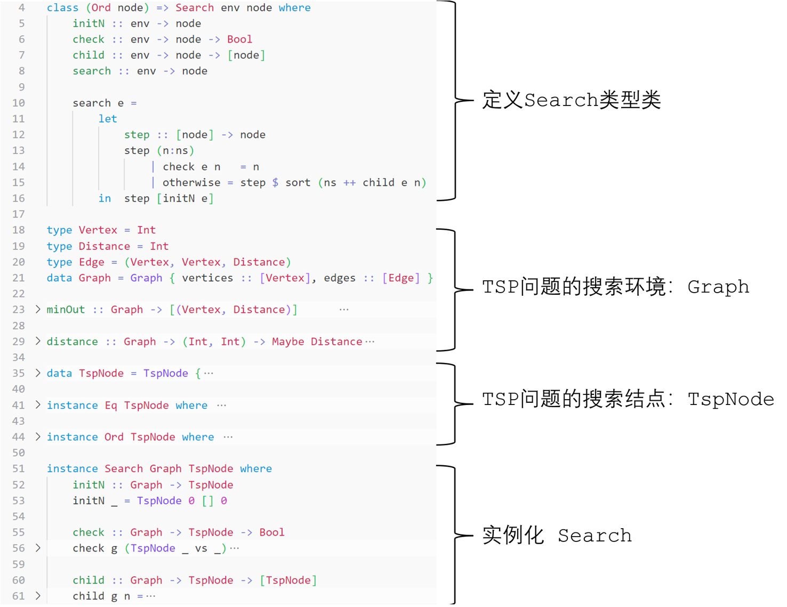

-Inspired by Algorithm Design and Analysis course, 2024 Fall-
Introduction
In this semester’s algorithms course, we focused on two major categories of search algorithms: backtracking and branch-and-bound. Previously, I always treated various search algorithms like DFS and BFS separately, comparing their differences. In this article, I aim to abstract search algorithms, expecting to derive familiar search strategies from a concise abstract model.
Abstracting the Search Model and Process
Here’s the model I’ve summarized, demonstrated in Haskell:
class (Ord node) => Search env node where
initN :: env -> node
check :: env -> node -> Bool
child :: env -> node -> [node]
search :: env -> node
Search env node: A search requires two elements: the search environmentenvand the search nodenode. Since we need to determine the expansion order based on the priority ofnode, we wantnodeto be orderable, hence theOrdconstraint.initN :: env -> node: A search needs initialization. The search tree requires a root node, so we want to generate a simple rootnodefrom the search environmentenv.check :: env -> node -> Bool: A search needs a stopping condition. We need a function to determine if the currentnodeis a solution based on the properties ofenv.child :: env -> node -> [node]: A search needs to continue. The live nodes of the search tree are expandable, so we need a function child to generate a list of child nodes[node]based onenvand the currentnode.search :: env -> node: The main search function. Its goal is to search within the environmentenvand eventually return the terminal nodenode, which is the optimal solution we seek.
To implement a search algorithm for a specific problem, we need to define the abstraction of the search environment env, design the node node, and implement the above functions: initN, check, child, and search.
The search model can be abstracted, and so can the search process. Therefore, I provide a default implementation of the search function (since initN, check, and child are often strongly tied to the specific problem and need to be provided during instantiation, they cannot rely on default implementations). This function abstracts the basic search process—starting from the root node (initN), checking (check) if the highest-priority node is a solution, returning it if true, otherwise expanding (child) its child nodes, reordering the live node list based on priority, and repeating this process:
search e =
let
step :: [node] -> node
step (n:ns)
| check e n = n
| otherwise = step $ sort (ns ++ child e n)
in step [initN e]
Example: Instantiating the TSP Search from the Model
-
Search Environment: The directed weighted graph
Graphis abstracted as follows:type Vertex = Int type Distance = Int type Edge = (Vertex, Vertex, Distance) data Graph = Graph { vertices :: [Vertex], edges :: [Edge] }Additionally, the search process relies on graph functions like
minOutanddistance:minOut :: Graph -> [(Vertex, Distance)] minOut (Graph vs es) = [ (v, minimum ds) | v <- vs, let es' = filter (\(v1, _, _) -> v1 == v) es, let ds = [ d | (_, _, d) <- es']] distance :: Graph -> (Int, Int) -> Maybe Distance distance (Graph _ []) _ = Nothing distance (Graph vs ((v1, v2, d):es)) (s, t) | s == v1 && t == v2 = Just d | otherwise = distance (Graph vs es) (s, t) -
Node Design (
TspNode):A node needs to store the current cost, the list of visited vertices, and the heuristic value (upper bound of the total cost):
data TspNode = TspNode { cost :: Int, visited :: [Vertex], -- reverse heuristic :: Int -- heuristic / priority } deriving (Show)The lower the heuristic value of a node, the higher its expansion priority.
instance Ord TspNode where compare :: TspNode -> TspNode -> Ordering compare n1 n2 | heuristic n1 > heuristic n2 = GT | heuristic n1 < heuristic n2 = LT | otherwise = EQ -
Search Function Instantiation:
To make
Graph TspNodean instance of theSearchtype class, we can use the default search implementation. However, we still need to implement theinitN,check, andchildfunctions:-
initN:The root node’s
costis 0, thevisitedlist is empty, and the heuristic value is irrelevant since the root node will always be the first to be checked and removed from the live node list, never participating in sorting. Thus, heuristic can be set to0:initN :: Graph -> TspNode initN _ = TspNode 0 [] 0If the current node has visited all vertices (starting from the origin, traversing a loop, and returning to the origin), then it is considered a solution:
check :: Graph -> TspNode -> Bool check g (TspNode _ vs _) | length vs == length (vertices g) = True | otherwise = False -
child:Based on the
visitedlist, calculate unvisited adjacent nodes. If all other vertices have been visited, attempt to return to the origin:child :: Graph -> TspNode -> [TspNode] child g n = let upBound :: [Vertex] -> Int upBound vs = sum [ d | (s,d) <- minOut g , s `notElem` vs ] at = if null (visited n) then 0 else head (visited n) -- then-clause only for initNode nodes = [TspNode cost' visited' heuristic' | v <- filter (\v' -> v' `notElem` visited n && isJust (distance g (at, v'))) -- or abstract this function to `checkChildValid` ((tail . vertices) g), -- `tail` for drop the origin vertex (0 here) let way = fromJust $ distance g (at, v), let cost' = cost n + way, let visited' = v: visited n, let heuristic' = upBound visited' + cost'] back = case distance g (at, 0) of Just wayback -> let cost' = cost n + wayback visited' = 0: visited n heuristic' = cost' in [TspNode cost' visited' heuristic'] Nothing -> [] in if length (visited n) == length (vertices g) - 1 then back else nodes
-
-
Overall Program Framework:

Brief Description of Other Instances
We can also represent DFS and BFS using this model. In data structure courses, we often use recursion for DFS and queues + iteration for BFS. In this model, changing the priority criteria of nodes changes the strategy for selecting nodes to expand, thereby altering the search behavior.
Assume we have a node like this:
data Node a = Node {
info :: a, -- Problem-specific node information
level :: Int, -- The level of the node in the search tree
order :: Int -- The order in which the node was generated
}
DFS always expands the deepest live node in the current search tree. To perform depth-first search in any search environment using this node, the priority should be set to level:
instance Ord (Node a) where
compare :: Node a -> Node a -> Ordering
compare n1 n2
| level n1 > level n2 = LT -- DEPTH first
| level n1 < level n2 = LT
| otherwise = EQ
BFS always expands the earliest generated live node in the current search tree. To perform breadth-first search in any search environment using this node, the priority should be set to order:
instance Ord (Node a) where
compare :: Node a -> Node a -> Ordering
compare n1 n2
| order n1 > order n2 = LT -- BREADTH first
| order n1 < order n2 = LT
| otherwise = EQ
Limitations
-
Lack of Application to More Specific Problems:
I initially planned to implement classic textbook cases using this model, but—time ran out. The deadline is approaching, so I only provided the instantiation of the TSP problem under this model.
-
Number of Solutions:
Here, I limited the number of solutions to 1, defaulting to the first solution as the problem’s solution. This is effective in some cases, such as the TSP problem implemented here, where the heuristic calculation ensures the first solution is the optimal one. However, there may be other scenarios: (a) the first solution is only an approximation of the optimal solution, which may be found later, or (b) multiple solutions need to be retained. These cases are not handled by the current model.